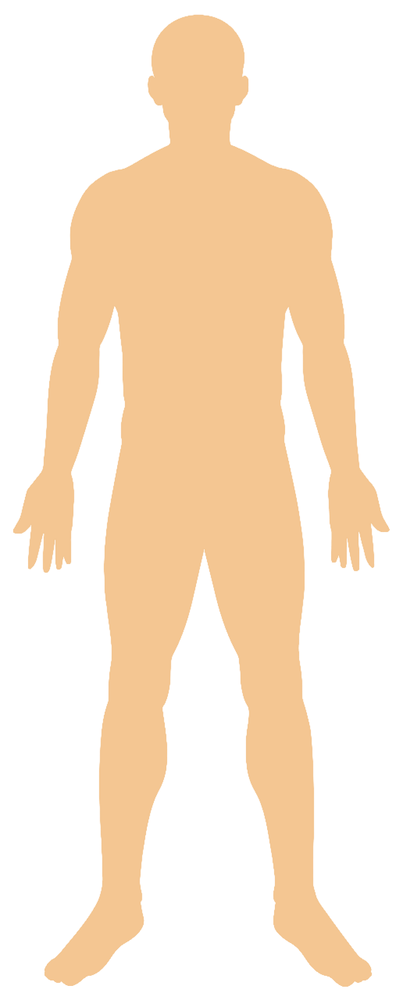
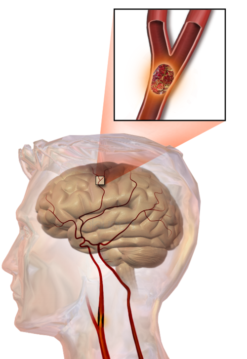
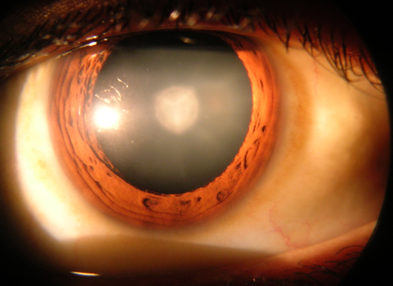
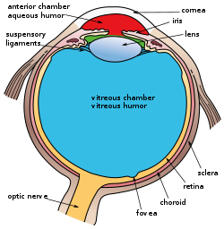
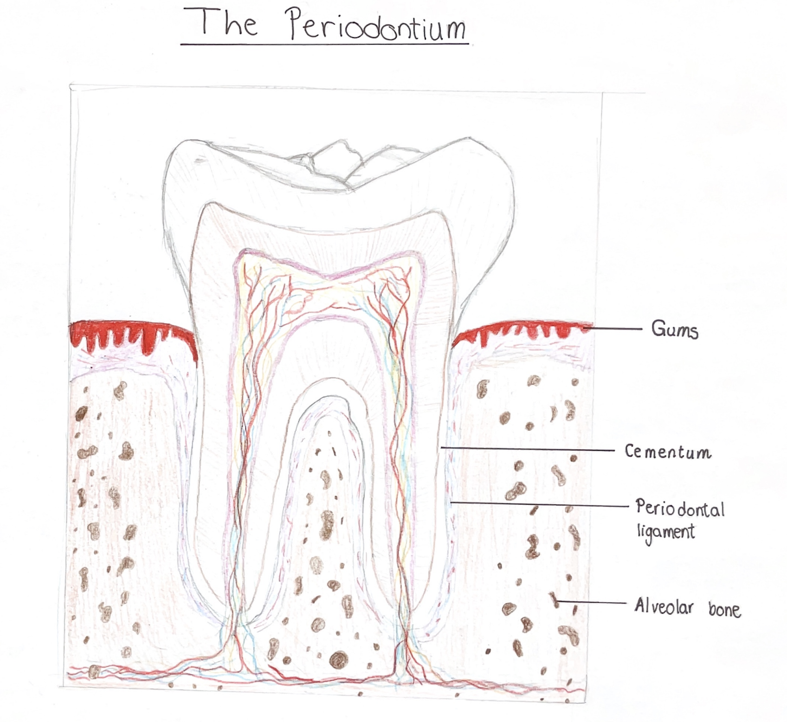
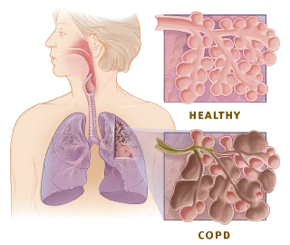
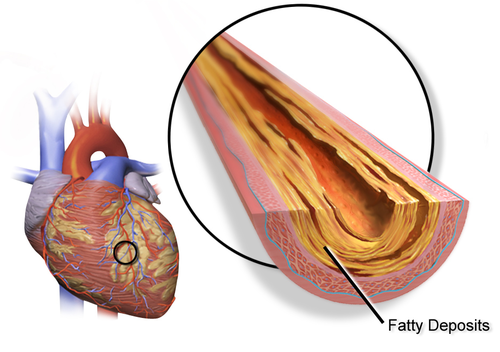
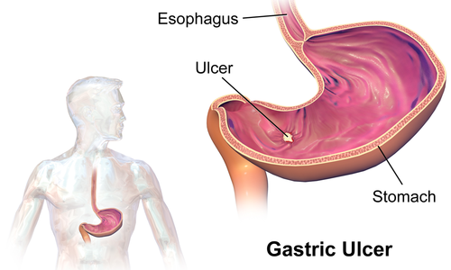

A stroke is a medical emergency that occurs when the brain does not receive enough blood. This can be caused by a blocked blood vessel or a brain haemorrhage. Strokes are life-threatening and can be fatal.  A cataract is a clouding of the normally clear lens. For people with cataracts, seeing through a cloudy lens is comparable to looking through frosted or fogged glass. The resulting blurred vision can make it difficult to read or drive at night. Most cataracts develop gradually and do not affect vision at first, but over time they eventually start to impact sight.  Age-related macular degeneration (AMD) is a chronic disease that leads to the irreversible destruction of the macula, which is located at the centre of the retina. It causes progressive loss of central vision, resulting in blindness and visual impairment.  The periodontium refers to the set of tissues that surround and support the teeth.  Pneumonia is an infection that causes the air sacs in one or both lungs to become inflamed. This can result in the air sacs filling with fluid or pus, leading to symptoms such as a cough producing phlegm (thick, sticky mucus produced in the lungs and lower respiratory tract) or pus, fever, chills and breathing difficulties. Pneumonia can be caused by various organisms, including bacteria, viruses and fungi. Pneumonia can range from mild to life-threatening. It is particularly serious in infants and young children, people over 65, and those with underlying health conditions or weakened immune systems. Chronic obstructive pulmonary disease (COPD) is a long-term lung condition caused by lung damage. This damage leads to inflammation and swelling inside the airways, which restricts the flow of air in and out of the lungs. This restriction in airflow is known as obstruction. Symptoms include difficulty breathing, a daily cough with mucus and wheezing in the lungs.  Tuberculosis is a serious disease that primarily affects the lungs. The germs that cause it are a type of bacterium. The disease can spread when an infected person coughs, sneezes or sings. This sprays tiny droplets containing the bacteria into the air. Another person can then inhale these droplets and the bacteria enter their lungs. Tuberculosis spreads easily in places where people gather in crowds or live in overcrowded conditions. People with weakened immune systems, which can result from smoking, are at a higher risk of contracting tuberculosis than those with normal immune systems. Atherosclerosis is the build-up of fat, cholesterol and other substances on and in the walls of arteries. This build-up is known as plaque. This can cause the arteries to narrow and block blood flow. It can also rupture, leading to the formation of a blood clot. Although atherosclerosis is often considered to be a heart disease, it can affect arteries anywhere in the body.  Peripheral artery disease (PAD) is a condition in which the arteries narrow, consequently reducing blood flow to the arms or legs. The legs or arms -usually the legs- do not receive enough blood flow to keep up with demand. This can cause leg pain when walking, leg numbness or weakness, muscle pain or cramping in the arms or legs, etc. An abdominal aortic aneurysm is an enlargement of the lower part of the body's main artery, the aorta. The aorta runs from the heart through the centre of the chest and abdomen. If an abdominal aortic aneurysm ruptures, it can cause life-threatening bleeding. Peptic ulcer disease (PUD) is a condition that causes open sores called ulcers in the lining of the digestive tract. In the stomach, pepsin and stomach acid help break down food for digestion; these substances are highly corrosive. Normally, a strong lining protects the digestive tract from these substances. However, in PUD, this protection breaks down. Pepsin and acid then destroy the lining, forming ulcers. Most ulcers form in the stomach or duodenum, where these substances are most active, but they can also occur elsewhere. Peptic ulcer disease causes pain in the upper abdomen and indigestion.  Inflammatory bowel disease (IBD) refers to a group of conditions. These conditions cause swelling and inflammation of the tissues of the digestive tract.
The most common types of IBD are:
Ulcerative colitis. This condition is characterised by inflammation and ulcers along the lining of the colon and rectum.
Crohn's disease. In this type of IBD, the lining of the digestive tract becomes inflamed. It often affects the deeper layers of the digestive tract. Crohn's disease most commonly affects the small intestine. However, it can also affect the large intestine and, less commonly, the upper gastrointestinal tract.
Symptoms of ulcerative colitis and Crohn's disease typically include abdominal pain, diarrhoea, rectal bleeding, extreme fatigue, and weight loss.
For some people, IBD is only a mild illness. For others, however, it is a disabling condition that can lead to life-threatening complications.
Rheumatoid arthritis is a chronic condition that causes inflammation, pain and swelling in the joints. However, it can also affect other parts of the body, including the skin, eyes, lungs, heart, and blood vessels. It is an autoimmune disorder, which occurs when the immune system mistakenly attacks the body's own tissues. [1] What is a stroke ?
[2] What is a cataract ?
[3] What is AMD ?
[4] What is the periodontium ?
[5] What is pneumonia ?
[6] What is a COPD ?
[7] What is a tuberculosis ?
[8] What is atherosclerosis ?
[9] What is peripheral artery disease ?
[10] What is an abdominal aortic aneurysm ?
[11] What is peptic ulcer disease ?
[12] What is inflammatory bowel disease ?
[13] What is rheumatoid arthritis ?